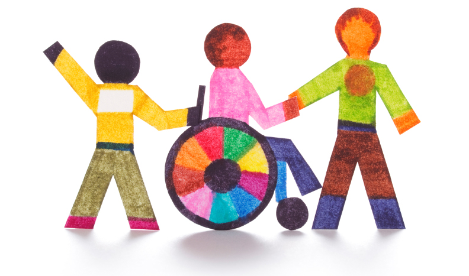

La educación cívica se entiende como la enseñanza y el aprendizaje de conocimientos, habilidades y actitudes relacionadas con la ciudadanía, la participación social y política, los derechos y deberes, y los valores democráticos. En esencia, busca formar ciudadanos competentes y responsables que puedan participar activamente en la vida pública y contribuir al bienestar de la sociedad. Para obtener mayor informacion ingrese al siguiente video.
La educación cívica busca desarrollar en las personas una comprensión del funcionamiento de la sociedad, el sistema político, las instituciones y las normas que regulan la convivencia. Se enseña sobre los derechos humanos, la democracia, la participación ciudadana, la ética y la responsabilidad social.
La educación cívica promueve la participación en actividades sociales y políticas, fomentando el diálogo, la reflexión crítica y la toma de decisiones informadas.
La educación cívica no solo se centra en el conocimiento teórico, sino también en la aplicación práctica de los conceptos aprendidos, a través de actividades y experiencias que promuevan la participación y la reflexión.